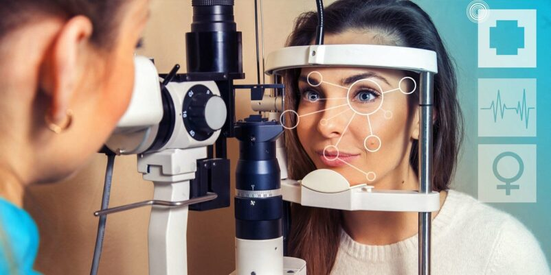
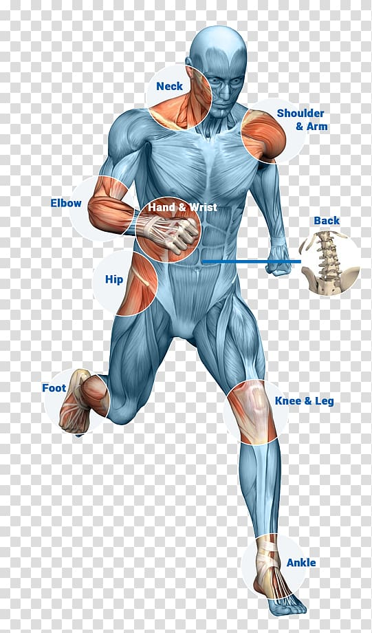
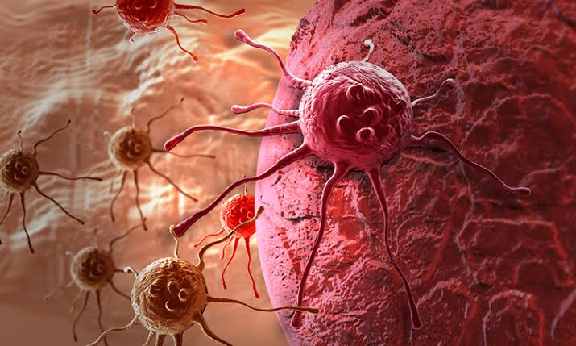

Cardiac Care
Mumbai offers world-class cardiac treatment with experienced cardiologists and advanced surgical technology.
- Coronary Artery Bypass Surgery (CABG)
- Angioplasty & Stent Placement
- Heart Valve Repair & Replacement
- Pacemaker & Device Implantation
Ideal for: Heart blockages, chest pain, valve disorders
Recovery: 1–4 weeks depending on procedure
Get Consultation
Ophthalmology (Eye Care)
Comprehensive eye care with modern laser technology and experienced specialists.
- Cataract Surgery (Phaco / Laser)
- LASIK Vision Correction
- Retinal Treatments
- Glaucoma Management
Ideal for: Vision correction, cataract, retinal issues
Recovery: 1–7 days
Get Consultation
Orthopedic Treatments
Advanced orthopedic procedures for joint replacement, sports injuries, and spine care.
- Knee Replacement Surgery
- Hip Replacement
- Spine Surgery
- Arthroscopy
Ideal for: Joint pain, mobility issues, injuries
Recovery: 2–6 weeks
Get Consultation
Oncology (Cancer Care)
Comprehensive cancer treatment including surgery, chemotherapy, and radiation therapy.
- Chemotherapy & Immunotherapy
- Radiation Therapy
- Surgical Oncology
- Targeted Therapy
Ideal for: Early and advanced cancer treatment
Recovery: Depends on treatment plan
Get Consultation